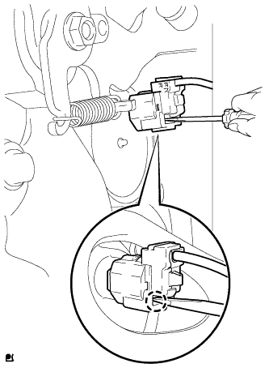
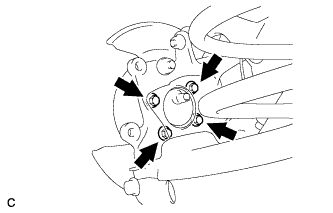
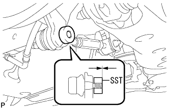
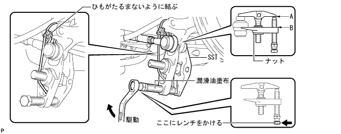

Rear Axle Carrier LH Removal |
| 1. Remove Rear Tire |
| 2. Rear Axle Shaft Nut LH Removal (Drive Type 4WD) |
 |
Set the SST aligned with the groove of the rear drive shaft assembly LH, and using a hammer, unstake the rear axle shaft nut.
Using a socket wrench (30mm), remove the rear axle shaft nut.
| 3. Disconnect Skid Control Sensor Wire (Drive Type FF) |
 |
Using a screwdriver, disengage the claw of the connector and disconnect the skid control sensor wire connector.
| 4. Disconnect Speed Sensor Rear LH (Drive Type 4WD) |
 |
Disconnect the speed sensor connector.
Remove the grommet and pull it out toward the outside of the vehicle.
Remove bolt A and disconnect sensor clamp No.3 from the body.

Remove bolt B and disconnect sensor clamp No.2 from the trailing arm bracket.
Disconnect sensor clamp No.1 from the slotted hole of the trailing arm.
Remove bolt C and the speed sensor RR LH.
| 5. Remove Parking Brake Lever Protector |
 |
Remove the parking brake lever protector from the parking brake cable assembly No.3.
| 6. Disconnect Parking Brake Cable Assembly NO.3 |
 |
Disconnect the cable end from the operating lever of the rear disc brake cylinder assembly LH.
 |
Using an offset wrench (14mm), disconnect parking brake cable assembly No.3 from the rear disc brake cylinder assembly LH.
| 7. Separate Rear Disc Brake Caliper Assembly LH (FF Drive) |
 |
Remove the 2 bolts and separate the rear disc brake caliper assembly LH from the rear axle carrier.
| 8. Separate Rear Disc Brake Caliper Assembly LH (4WD Drive) |
|
Remove the 2 bolts and disconnect the rear disc brake caliper assembly LH.
| 9. Remove Rear Disc |
 |
Put matchmarks on the disc and axle hub, and remove the disc.
| 10. Rear Axle Hub & Bearing Assembly LH Removal (Drive Type FF) |
 |
Remove the 4 bolts and remove the rear axle hub & bearing assembly LH from the rear axle carrier.
| 11. Rear Axle Hub & Bearing Assembly LH Removal (Drive Type 4WD) |
 |
Remove the 4 bolts and disconnect the rear axle hub & bearing assembly LH from the rear axle carrier.
While lightly tapping the end of the rear drive shaft with a plastic hammer, remove the rear axle hub & bearing assembly LH from the rear axle carrier.
| 12. Height Control Sensor Sub-assembly Rear Removal |
 |
Disconnect the connector and disengage the clamp.
 |
Remove the 2 bolts and remove the height control sensor assembly (rear).
| 13. Remove Rear Suspension Arm Assembly NO.1 LH |
 |
Remove the nut of the rear suspension arm assembly No.1 LH (rear axle carrier LH side).
 |
Install SST to the stud bolt of the rear suspension arm assembly No.1LH.
Using SST, separate the rear suspension arm assembly No.1 LH from the rear axle carrier LH.

 |
Remove the bolt and nut, and remove the rear suspension arm assembly No.1 LH from the rear suspension member.
| 14. Rear Trailing Arm Assembly Loosening |
 |
Loosen the 2 bolts of the trailing arm assembly rear.
| 15. Loosen Rear Suspension Arm Assembly NO.2 LH |
 |
Loosen the bolt and nut of the rear suspension arm assembly No.2 LH.
| 16. Remove Rear Axle Carrier LH |
 |
Remove the bolt and nut, and disconnect the upper control arm assembly rear LH from the rear axle carrier.
Remove the bolts and nuts, and remove the rear axle carrier from the trailing arm assembly rear and rear suspension arm assembly No.2 LH.